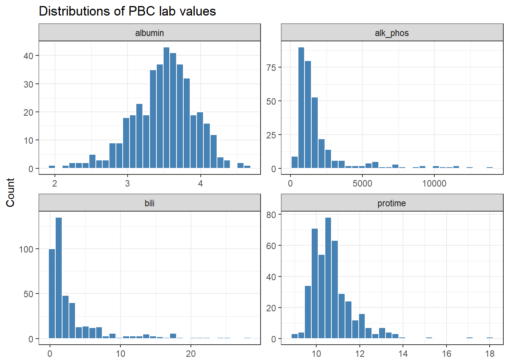
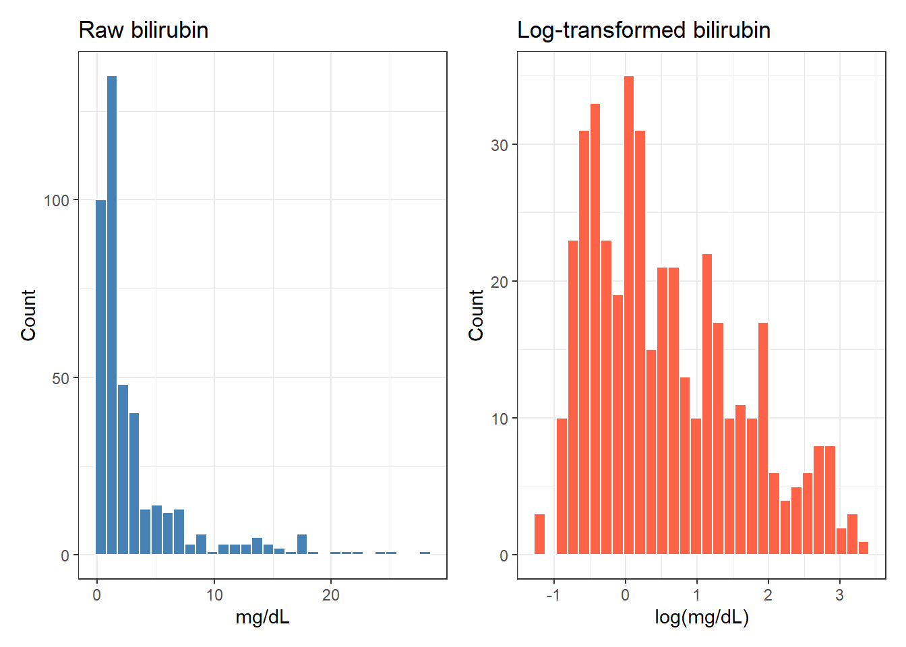
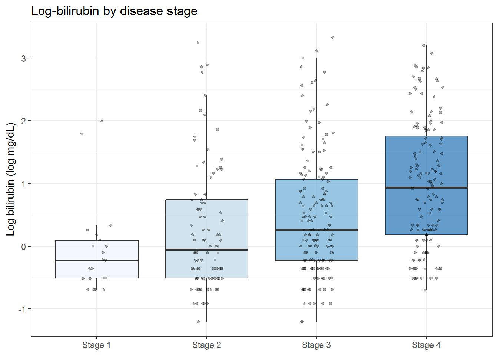
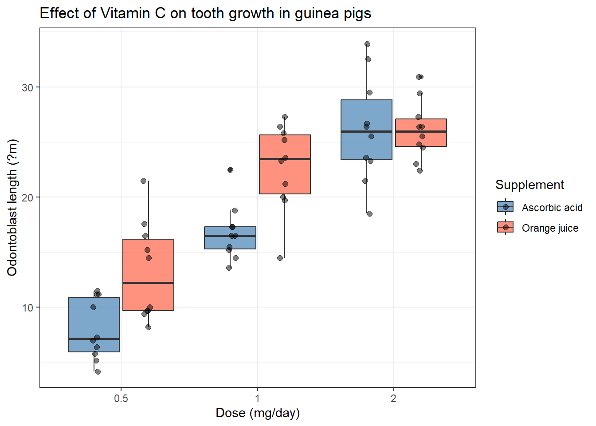
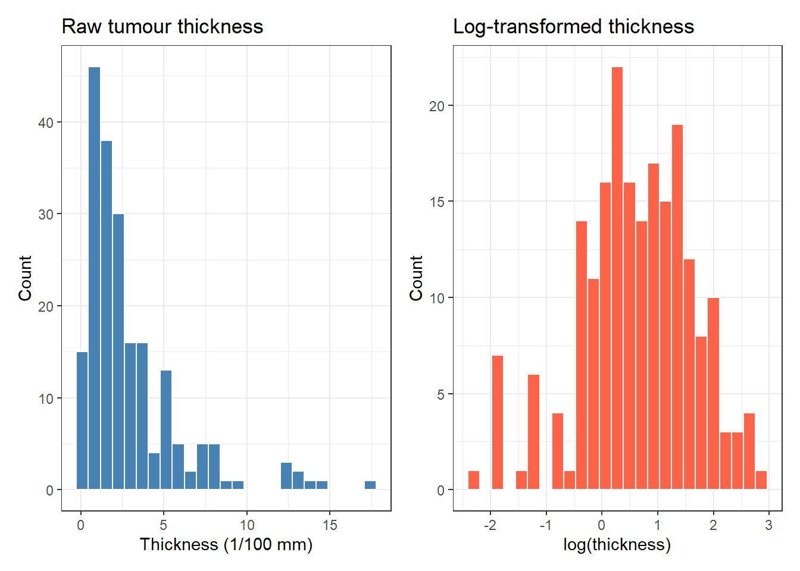
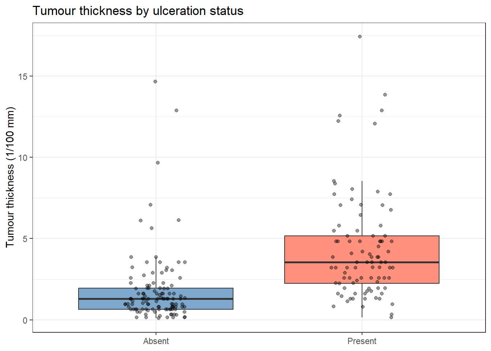
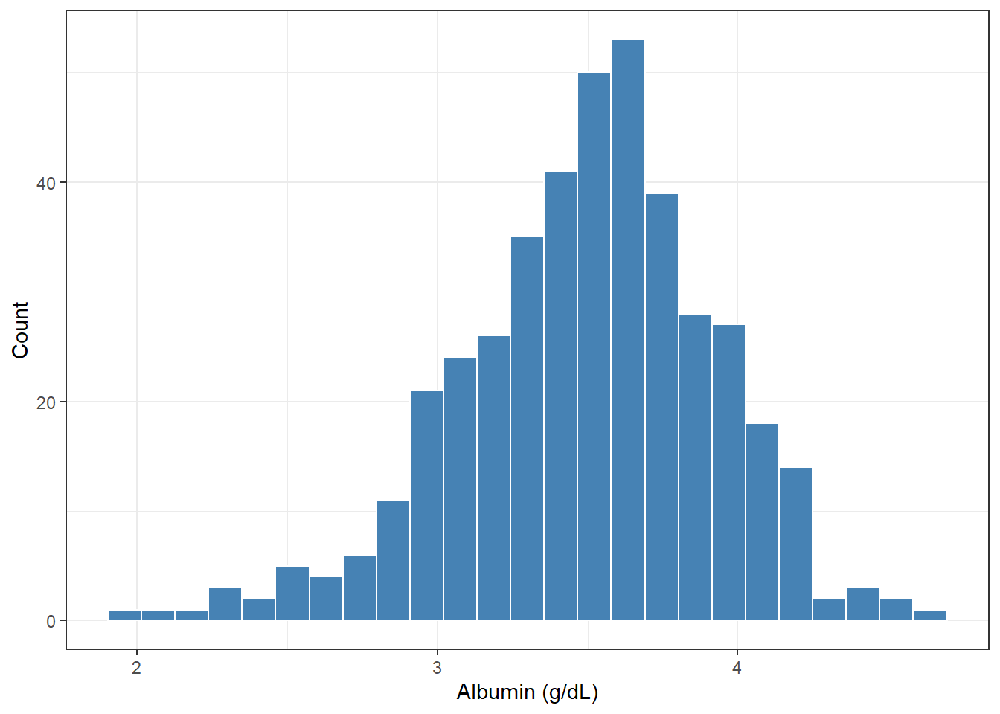

pbc <- survival::pbc %>%
as_tibble() %>%
janitor::clean_names() %>%
mutate(
sex = factor(sex, levels = c("f", "m"), labels = c("Female", "Male")),
trt = factor(trt, levels = c(1, 2), labels = c("D-penicillamine", "Placebo")),
stage = factor(stage, levels = 1:4, labels = paste("Stage", 1:4))
)8 Exploring Clinical and Medical Data with R
8.1 When Do You Use This?
You download a clinical dataset for the first time. Before running a single test you need to understand what you have: how many patients, which variables, how much missing data, whether distributions look plausible, and whether there are obvious data quality issues. This session teaches that systematic exploration process.
8.2 Learning Objectives
After completing this session you will be able to:
- Load and inspect a clinical dataset in R
- Identify missing values, implausible values, and data quality issues
- Produce a descriptive summary table appropriate for Table 1 in a paper
- Visualize distributions, group differences, and dose-response relationships
- Apply log transformation to right-skewed lab values and explain why
8.3 Background: Why Explore Before You Analyse?
Exploratory data analysis (EDA) is not optional ? it is the first analytic step for every dataset. Rushing to a regression or a t-test without first understanding the data leads to errors that are hard to detect later.
The systematic EDA workflow is:
- Structure ? how many rows, columns, variable types?
- Missing data ? which variables have gaps, and do they appear at random?
- Distributions ? continuous variables: symmetric or skewed? Categorical: any rare levels?
- Plausibility ? are any values biologically implausible?
- Group comparisons ? do key variables differ across groups as expected?
8.4 Example 1: Primary Biliary Cholangitis (PBC)
The pbc dataset records 418 patients from a randomised trial of a treatment for primary biliary cholangitis (PBC), a chronic liver disease. It is built into the survival package.
8.4.1 Load and Inspect
glimpse(pbc)Rows: 418
Columns: 20
$ id <int> 1, 2, 3, 4, 5, 6, 7, 8, 9, 10, 11, 12, 13, 14, 15, 16, 17, 18…
$ time <int> 400, 4500, 1012, 1925, 1504, 2503, 1832, 2466, 2400, 51, 3762…
$ status <int> 2, 0, 2, 2, 1, 2, 0, 2, 2, 2, 2, 2, 0, 2, 2, 0, 2, 2, 0, 2, 0…
$ trt <fct> D-penicillamine, D-penicillamine, D-penicillamine, D-penicill…
$ age <dbl> 58.76523, 56.44627, 70.07255, 54.74059, 38.10541, 66.25873, 5…
$ sex <fct> Female, Female, Male, Female, Female, Female, Female, Female,…
$ ascites <int> 1, 0, 0, 0, 0, 0, 0, 0, 0, 1, 0, 0, 0, 1, 0, 0, 0, 0, 0, 0, 0…
$ hepato <int> 1, 1, 0, 1, 1, 1, 1, 0, 0, 0, 1, 0, 0, 1, 0, 0, 1, 1, 1, 1, 1…
$ spiders <int> 1, 1, 0, 1, 1, 0, 0, 0, 1, 1, 1, 1, 0, 0, 0, 0, 0, 1, 0, 0, 1…
$ edema <dbl> 1.0, 0.0, 0.5, 0.5, 0.0, 0.0, 0.0, 0.0, 0.0, 1.0, 0.0, 0.0, 0…
$ bili <dbl> 14.5, 1.1, 1.4, 1.8, 3.4, 0.8, 1.0, 0.3, 3.2, 12.6, 1.4, 3.6,…
$ chol <int> 261, 302, 176, 244, 279, 248, 322, 280, 562, 200, 259, 236, 2…
$ albumin <dbl> 2.60, 4.14, 3.48, 2.54, 3.53, 3.98, 4.09, 4.00, 3.08, 2.74, 4…
$ copper <int> 156, 54, 210, 64, 143, 50, 52, 52, 79, 140, 46, 94, 40, 43, 1…
$ alk_phos <dbl> 1718.0, 7394.8, 516.0, 6121.8, 671.0, 944.0, 824.0, 4651.2, 2…
$ ast <dbl> 137.95, 113.52, 96.10, 60.63, 113.15, 93.00, 60.45, 28.38, 14…
$ trig <int> 172, 88, 55, 92, 72, 63, 213, 189, 88, 143, 79, 95, 130, NA, …
$ platelet <int> 190, 221, 151, 183, 136, NA, 204, 373, 251, 302, 258, 71, 244…
$ protime <dbl> 12.2, 10.6, 12.0, 10.3, 10.9, 11.0, 9.7, 11.0, 11.0, 11.5, 12…
$ stage <fct> Stage 4, Stage 3, Stage 4, Stage 4, Stage 3, Stage 3, Stage 3…glimpse() shows the number of rows and columns, and the first few values of every variable. Use it before doing anything else.
8.4.2 Missing Data
pbc %>%
summarise(across(everything(), ~ sum(is.na(.)))) %>%
pivot_longer(everything(), names_to = "variable", values_to = "n_missing") %>%
filter(n_missing > 0) %>%
arrange(desc(n_missing))# A tibble: 12 × 2
variable n_missing
<chr> <int>
1 trig 136
2 chol 134
3 copper 108
4 trt 106
5 ascites 106
6 hepato 106
7 spiders 106
8 alk_phos 106
9 ast 106
10 platelet 11
11 stage 6
12 protime 2Several variables have missing data. Note that trt is NA for patients who were not randomised ? they are valid observational cases but should be excluded from the treatment comparison.
8.4.3 Summary Table (Table 1)
pbc %>%
filter(!is.na(trt)) %>%
select(trt, age, sex, stage, bili, albumin, protime, alk_phos) %>%
tbl_summary(
by = trt,
missing = "no",
statistic = list(all_continuous() ~ "{median} ({p25}, {p75})")
) %>%
add_overall() %>%
add_p() %>%
bold_labels()| Characteristic | Overall N = 3121 |
D-penicillamine N = 1581 |
Placebo N = 1541 |
p-value2 |
|---|---|---|---|---|
| age | 50 (42, 57) | 52 (43, 59) | 48 (41, 56) | 0.020 |
| sex | 0.3 | |||
| Female | 276 (88%) | 137 (87%) | 139 (90%) | |
| Male | 36 (12%) | 21 (13%) | 15 (9.7%) | |
| stage | 0.2 | |||
| Stage 1 | 16 (5.1%) | 12 (7.6%) | 4 (2.6%) | |
| Stage 2 | 67 (21%) | 35 (22%) | 32 (21%) | |
| Stage 3 | 120 (38%) | 56 (35%) | 64 (42%) | |
| Stage 4 | 109 (35%) | 55 (35%) | 54 (35%) | |
| bili | 1.4 (0.8, 3.5) | 1.4 (0.8, 3.2) | 1.3 (0.7, 3.6) | 0.8 |
| albumin | 3.55 (3.31, 3.80) | 3.57 (3.21, 3.83) | 3.55 (3.34, 3.78) | >0.9 |
| protime | 10.60 (10.00, 11.10) | 10.60 (10.00, 11.00) | 10.60 (10.00, 11.40) | 0.6 |
| alk_phos | 1,259 (867, 1,985) | 1,215 (836, 2,039) | 1,283 (918, 1,960) | 0.8 |
| 1 Median (Q1, Q3); n (%) | ||||
| 2 Wilcoxon rank sum test; Pearson’s Chi-squared test | ||||
Note
Reading Table 1: Continuous variables are summarised as median (IQR) because most are right-skewed. Categorical variables are shown as count (%). The p-values compare the two treatment groups ? we would expect them to be non-significant for baseline variables in a properly randomised trial.
8.4.4 Distributions of Key Lab Values
pbc %>%
select(bili, albumin, protime, alk_phos) %>%
pivot_longer(everything(), names_to = "variable", values_to = "value") %>%
ggplot(aes(x = value)) +
geom_histogram(bins = 30, fill = "steelblue", color = "white") +
facet_wrap(~ variable, scales = "free") +
labs(title = "Distributions of PBC lab values", x = NULL, y = "Count") +
theme_bw()Warning: Removed 108 rows containing non-finite outside the scale range
(`stat_bin()`).
All four lab values are right-skewed. This is typical for biochemical markers ? a few patients have very high values. When you run models with these variables, consider log-transforming them.
8.4.5 Log Transformation
Right-skewed distributions violate the normality assumption required by many statistical tests. Log transformation compresses the long right tail.
p_raw <- ggplot(pbc, aes(x = bili)) +
geom_histogram(bins = 30, fill = "steelblue", color = "white") +
labs(title = "Raw bilirubin", x = "mg/dL", y = "Count") +
theme_bw()
p_log <- ggplot(pbc, aes(x = log(bili))) +
geom_histogram(bins = 30, fill = "tomato", color = "white") +
labs(title = "Log-transformed bilirubin", x = "log(mg/dL)", y = "Count") +
theme_bw()
wrap_plots(p_raw, p_log)
After log transformation, the distribution is approximately symmetric. When you report results from a model fitted on log-bilirubin, back-transform to the original scale using exp() for clinical interpretability.
pbc %>%
summarise(
mean_raw = mean(bili, na.rm = TRUE),
median_raw = median(bili, na.rm = TRUE),
mean_log = mean(log(bili), na.rm = TRUE),
back_transf = exp(mean(log(bili), na.rm = TRUE))
)# A tibble: 1 × 4
mean_raw median_raw mean_log back_transf
<dbl> <dbl> <dbl> <dbl>
1 3.22 1.4 0.571 1.77The back_transf value is the geometric mean ? the appropriate average for log-normal data.
8.4.6 Group Comparison by Stage
pbc %>%
filter(!is.na(stage)) %>%
ggplot(aes(x = stage, y = log(bili), fill = stage)) +
geom_boxplot(alpha = 0.7, outlier.shape = NA) +
geom_jitter(width = 0.15, alpha = 0.3, size = 1) +
scale_fill_brewer(palette = "Blues") +
labs(
title = "Log-bilirubin by disease stage",
x = NULL,
y = "Log bilirubin (log mg/dL)"
) +
theme_bw() +
theme(legend.position = "none")
Bilirubin clearly increases with disease stage ? a sensible finding that validates the data.
8.5 Example 2: Vitamin C and Tooth Growth (Animal Experiment)
The ToothGrowth dataset records the effect of Vitamin C dose and delivery method on the length of odontoblasts (tooth growth cells) in 60 guinea pigs. It is built into base R.
tg <- ToothGrowth %>%
as_tibble() %>%
mutate(
dose = factor(dose, levels = c(0.5, 1.0, 2.0)),
supp = factor(supp, levels = c("VC", "OJ"),
labels = c("Ascorbic acid", "Orange juice"))
)8.5.1 Structure and Summary
skim(tg)| Name | tg |
| Number of rows | 60 |
| Number of columns | 3 |
| _______________________ | |
| Column type frequency: | |
| factor | 2 |
| numeric | 1 |
| ________________________ | |
| Group variables | None |
Variable type: factor
| skim_variable | n_missing | complete_rate | ordered | n_unique | top_counts |
|---|---|---|---|---|---|
| supp | 0 | 1 | FALSE | 2 | Asc: 30, Ora: 30 |
| dose | 0 | 1 | FALSE | 3 | 0.5: 20, 1: 20, 2: 20 |
Variable type: numeric
| skim_variable | n_missing | complete_rate | mean | sd | p0 | p25 | p50 | p75 | p100 | hist |
|---|---|---|---|---|---|---|---|---|---|---|
| len | 0 | 1 | 18.81 | 7.65 | 4.2 | 13.07 | 19.25 | 25.27 | 33.9 | ▅▃▅▇▂ |
10 observations per dose-supplement combination ? a balanced 3 x 2 factorial design.
8.5.2 Dose-Response Relationship
tg %>%
ggplot(aes(x = dose, y = len, fill = supp)) +
geom_boxplot(position = position_dodge(0.8), alpha = 0.7) +
geom_jitter(aes(group = supp), position = position_jitterdodge(jitter.width = 0.1),
alpha = 0.5, size = 2) +
scale_fill_manual(values = c("Ascorbic acid" = "steelblue", "Orange juice" = "tomato")) +
labs(
title = "Effect of Vitamin C on tooth growth in guinea pigs",
x = "Dose (mg/day)",
y = "Odontoblast length (?m)",
fill = "Supplement"
) +
theme_bw()
8.5.3 Interpreting This Figure
- Tooth growth increases with dose for both supplement types.
- At lower doses (0.5 and 1.0 mg/day), orange juice produces more growth than ascorbic acid.
- At the highest dose (2.0 mg/day), the two supplements are approximately equivalent.
- This is an interaction ? the effect of supplement type depends on dose level.
8.6 Example 3: Melanoma Survival Data
The boot::melanoma dataset contains data on 205 patients with malignant melanoma who had a tumour removed at Odense University Hospital between 1962 and 1977.
# boot::melanoma; if boot is not installed, survival::melanoma is an alternative
melanoma <- boot::melanoma %>%
as_tibble() %>%
mutate(
status = factor(status, levels = c(2, 1, 3),
labels = c("Alive", "Died from melanoma", "Other death")),
ulceration = factor(ulcer, levels = c(0, 1), labels = c("Absent", "Present"))
)8.6.1 Tumour Thickness Distribution
p1 <- ggplot(melanoma, aes(x = thickness)) +
geom_histogram(bins = 25, fill = "steelblue", color = "white") +
labs(title = "Raw tumour thickness", x = "Thickness (1/100 mm)", y = "Count") +
theme_bw()
p2 <- ggplot(melanoma, aes(x = log(thickness))) +
geom_histogram(bins = 25, fill = "tomato", color = "white") +
labs(title = "Log-transformed thickness", x = "log(thickness)", y = "Count") +
theme_bw()
wrap_plots(p1, p2)
8.6.2 Thickness by Ulceration Status
melanoma %>%
ggplot(aes(x = ulceration, y = thickness, fill = ulceration)) +
geom_boxplot(alpha = 0.7, outlier.shape = NA) +
geom_jitter(width = 0.15, alpha = 0.4) +
scale_fill_manual(values = c("Absent" = "steelblue", "Present" = "tomato")) +
labs(
title = "Tumour thickness by ulceration status",
x = NULL,
y = "Tumour thickness (1/100 mm)"
) +
theme_bw() +
theme(legend.position = "none")
Ulcerated tumours tend to be thicker ? consistent with the known relationship between tumour thickness (Breslow depth) and aggressiveness.
8.7 Where to Find Data Like This
Built-in R datasets used in this session: - survival::pbc ? primary biliary cholangitis clinical trial, 418 patients - boot::melanoma ? melanoma surgery outcomes, 205 patients - datasets::ToothGrowth ? guinea pig tooth growth factorial experiment
Other clinical datasets in the survival package: lung, veteran, colon, diabetic, udca ? all real datasets from clinical trials and registries.
NHANES (National Health and Nutrition Examination Survey): ::: {.cell}
install.packages("nhanesA")
library(nhanesA)
nhanes("DEMO_J") # demographic data from 2017-2018 cycle:::
Mouse Phenome Database: phenome.jax.org ? download CSV files of mouse phenotype data directly into R.
8.8 What Can Go Wrong
Removing rows with na.omit() without thinking na.omit() drops any row with any missing value. In a dataset with many columns, this can discard most of the data. Instead, use filter(!is.na(variable_of_interest)) to drop only rows where the key variable is missing.
Treating ordered categories as numbers Disease stage (1, 2, 3, 4) looks like a number, but treating it as continuous implies equal spacing between stages. Use factor(stage) unless you have a specific reason to model it as numeric.
Plotting raw lab values without checking for outliers first One extreme outlier can collapse the entire axis scale. Always check the range with range(x, na.rm = TRUE) before plotting, and consider whether very extreme values are plausible or data entry errors.
Forgetting to back-transform If you fit a model on log(bilirubin), your coefficients are on the log scale. Report exp(estimate) with exp(CI) when writing up. The units are now geometric means and ratios, not raw differences.
8.9 Exercises
8.9.1 Exercise 1 (Guided): Full EDA of PBC Dataset
Using survival::pbc:
- How many patients are in the dataset? How many were randomised?
- Which variables have more than 10% missing data?
- Create a histogram and boxplot for
albumin. Does it look normally distributed? - Create a Table 1 comparing
albumin,bili, andprotimeby treatment group.
Exercise 1: Solution
# 1. Patient counts
nrow(pbc)[1] 418sum(!is.na(pbc$trt)) # randomised patients[1] 312# 2. Missing > 10%
pbc %>%
summarise(across(everything(), ~ mean(is.na(.)))) %>%
pivot_longer(everything(), names_to = "var", values_to = "pct_missing") %>%
filter(pct_missing > 0.10) %>%
mutate(pct_missing = scales::percent(pct_missing, 0.1))# A tibble: 9 × 2
var pct_missing
<chr> <chr>
1 trt 25.4%
2 ascites 25.4%
3 hepato 25.4%
4 spiders 25.4%
5 chol 32.1%
6 copper 25.8%
7 alk_phos 25.4%
8 ast 25.4%
9 trig 32.5% # 3. Albumin distribution
ggplot(pbc, aes(x = albumin)) +
geom_histogram(bins = 25, fill = "steelblue", color = "white") +
labs(x = "Albumin (g/dL)", y = "Count") + theme_bw()
# 4. Table 1
pbc %>%
filter(!is.na(trt)) %>%
select(trt, albumin, bili, protime) %>%
tbl_summary(by = trt,
statistic = list(all_continuous() ~ "{median} ({p25}, {p75})")) %>%
add_p() %>% bold_labels()| Characteristic | D-penicillamine N = 1581 |
Placebo N = 1541 |
p-value2 |
|---|---|---|---|
| albumin | 3.57 (3.21, 3.83) | 3.55 (3.34, 3.78) | >0.9 |
| bili | 1.4 (0.8, 3.2) | 1.3 (0.7, 3.6) | 0.8 |
| protime | 10.60 (10.00, 11.00) | 10.60 (10.00, 11.40) | 0.6 |
| 1 Median (Q1, Q3) | |||
| 2 Wilcoxon rank sum test | |||
8.9.2 Exercise 2 (Semi-guided): ToothGrowth Exploration
Using ToothGrowth:
- How many observations are there per dose-supplement combination?
- Calculate the mean and SD of
lenfor each group. - Create a line plot showing mean length ? SD by dose, with separate lines for each supplement.
- Write one sentence describing the interaction you see.
Exercise 2: Solution
tg <- ToothGrowth %>% as_tibble() %>%
mutate(dose = factor(dose), supp = factor(supp, labels = c("Ascorbic acid", "OJ")))
# 1. Counts
count(tg, dose, supp)# A tibble: 6 × 3
dose supp n
<fct> <fct> <int>
1 0.5 Ascorbic acid 10
2 0.5 OJ 10
3 1 Ascorbic acid 10
4 1 OJ 10
5 2 Ascorbic acid 10
6 2 OJ 10# 2. Summary statistics
tg %>%
group_by(dose, supp) %>%
summarise(mean_len = mean(len), sd_len = sd(len), .groups = "drop")# A tibble: 6 × 4
dose supp mean_len sd_len
<fct> <fct> <dbl> <dbl>
1 0.5 Ascorbic acid 13.2 4.46
2 0.5 OJ 7.98 2.75
3 1 Ascorbic acid 22.7 3.91
4 1 OJ 16.8 2.52
5 2 Ascorbic acid 26.1 2.66
6 2 OJ 26.1 4.80# 3. Line plot
tg %>%
group_by(dose, supp) %>%
summarise(mean = mean(len), sd = sd(len), .groups = "drop") %>%
ggplot(aes(x = dose, y = mean, color = supp, group = supp)) +
geom_line(size = 1) +
geom_errorbar(aes(ymin = mean - sd, ymax = mean + sd), width = 0.1) +
geom_point(size = 3) +
scale_color_manual(values = c("steelblue", "tomato")) +
labs(title = "Mean tooth length ? SD by dose and supplement",
x = "Dose (mg/day)", y = "Length (?m)", color = "Supplement") +
theme_bw()Warning: Using `size` aesthetic for lines was deprecated in ggplot2 3.4.0.
ℹ Please use `linewidth` instead.
8.9.3 Exercise 3 (Open-ended)
Download a dataset from your own research or from NHANES. Perform a complete EDA: (1) inspect structure and missing data, (2) produce a Table 1 with gtsummary, (3) create at least two visualisations, and (4) write a half-page data report as you would for a Methods section.
8.10 Comprehension Check
- You run
skim(pbc)and seen_missing = 106for thetrtvariable. What is the most likely explanation, and what should you do before running a treatment comparison? - A histogram of albumin values shows a roughly symmetric, bell-shaped distribution. A histogram of bilirubin values shows a long right tail. How should you handle these differently when fitting a linear model?
- Why is the geometric mean (back-transformed from log scale) more appropriate than the arithmetic mean for a right-skewed variable like bilirubin?
- You have 10 animals per group in a 2 ? 3 factorial experiment (2 supplements ? 3 dose levels). How many observations total? What does “balanced design” mean?
- A colleague creates a Table 1 that shows means and standard deviations for all continuous variables, including bilirubin (which is heavily right-skewed). What is wrong with this, and what should they report instead?
Answers
- The 106 missing values in
trtare patients who enrolled in the observational portion of the study and were not randomised. They are valid cases for some analyses but should be excluded withfilter(!is.na(trt))when comparing treatment arms. - Albumin is approximately normally distributed, so it can be entered into a model on its original scale. Bilirubin is right-skewed, so log-transform it before modelling:
log(bili). After modelling, back-transform coefficients and confidence intervals withexp(). - The arithmetic mean is pulled upward by extreme high values in a right-skewed distribution, so it does not represent the “typical” patient. The geometric mean (exp(mean(log(x)))) is the value that, when raised to the power n, equals the product of all observations ? it is a more robust central measure for log-normal data.
- 10 ? 2 ? 3 = 60 total observations. A balanced design has the same number of observations in every cell of the design, which simplifies analysis and maximises statistical power.
- For a right-skewed variable, the mean and SD are misleading because extreme outliers inflate both. The correct summary is median and interquartile range (IQR), as the median is resistant to extreme values.
8.11 Further Reading
- R for Data Science, Chapter 11: Exploratory Data Analysis — Wickham & Grolemund
- gtsummary documentation — Table 1 and beyond
- skimr documentation — quick dataset summaries